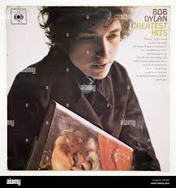
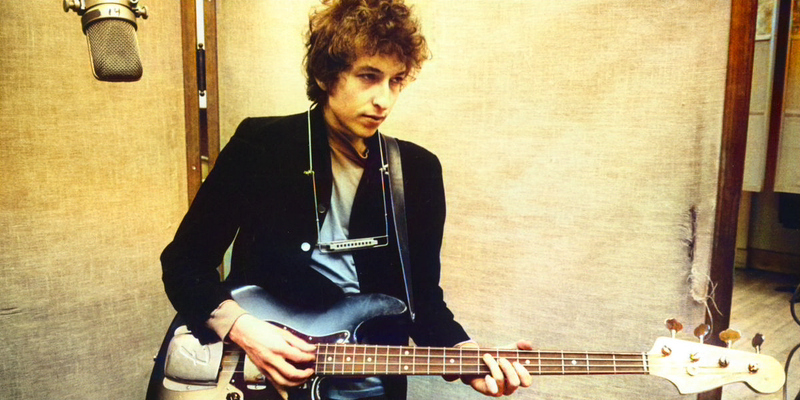
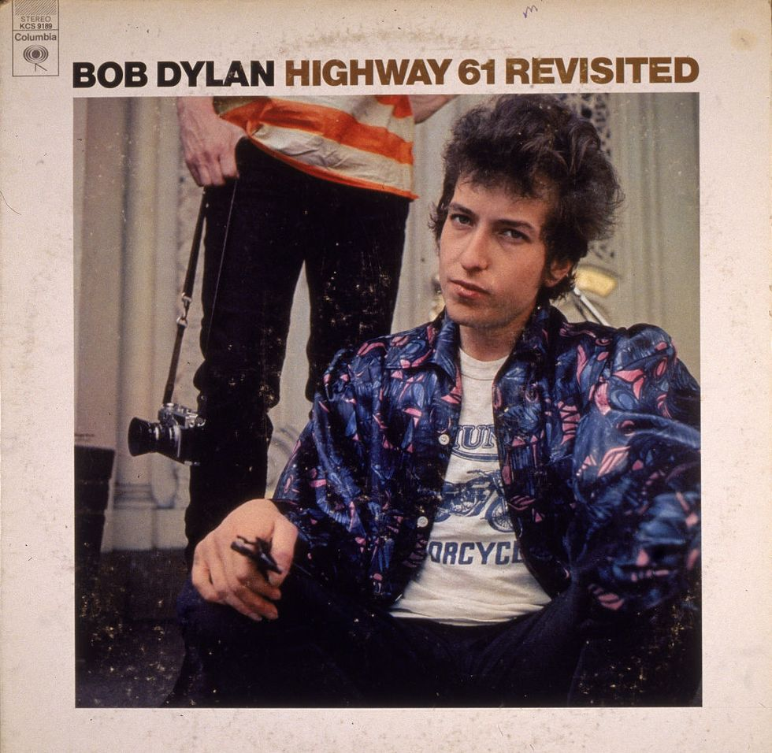
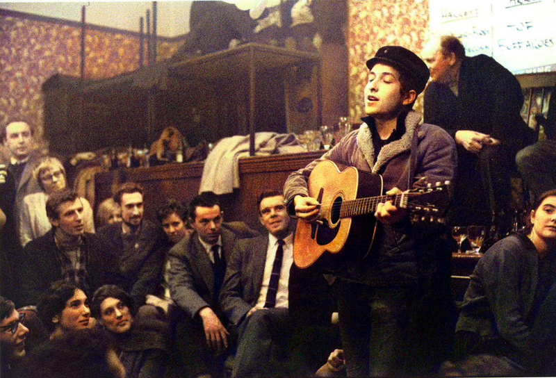
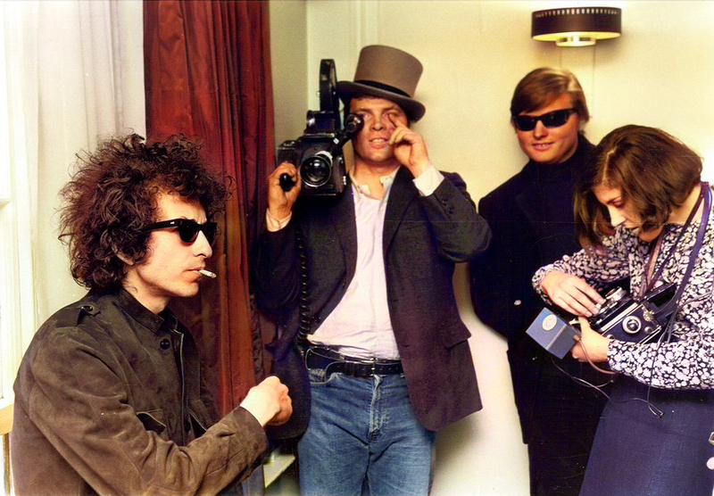
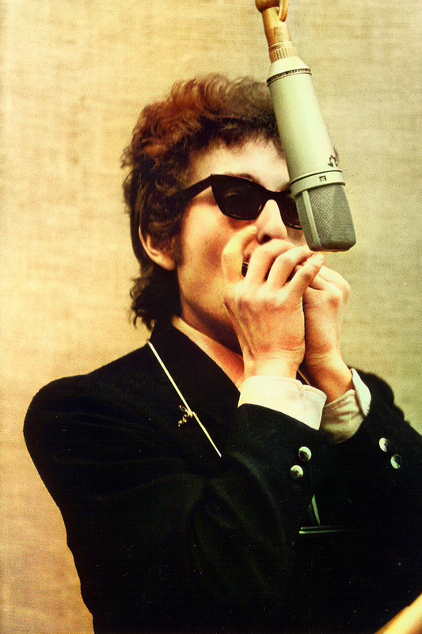
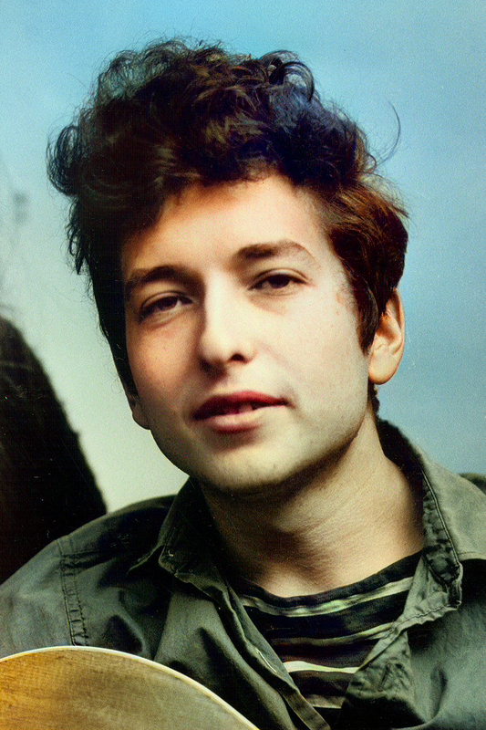
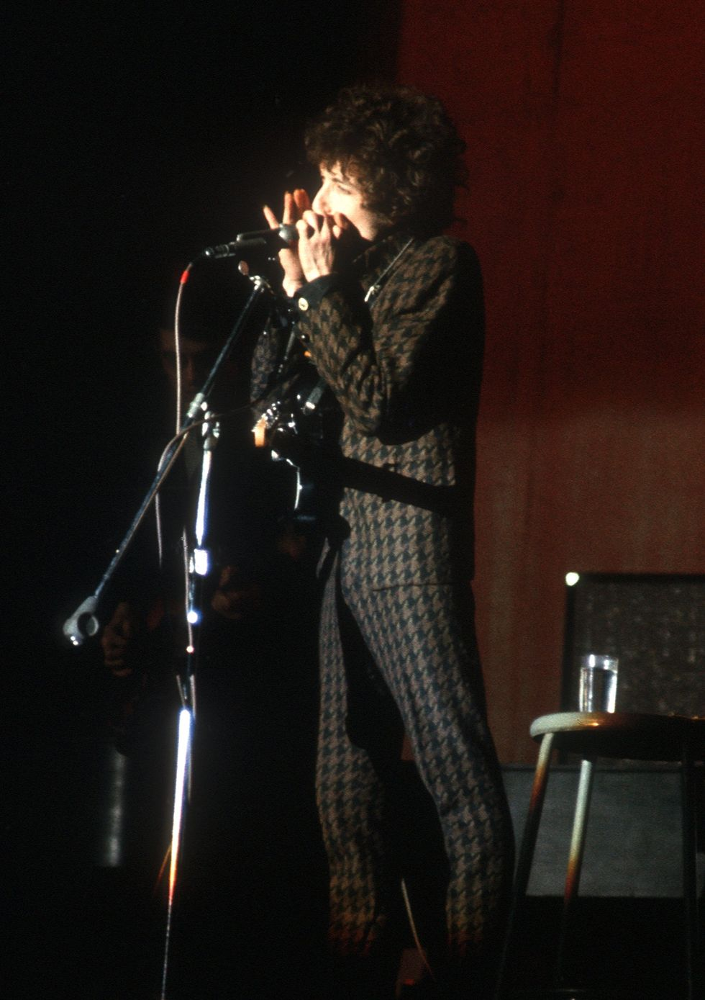

My Photos
Hover the photos










Bob Dylan, born Robert Allen Zimmerman on May 24, 1941, is a renowned American singer-songwriter with a profound impact on popular culture over his 60-year career. Growing up in Hibbing, Minnesota, Dylan developed his talent for music early, influenced by performers such as Elton John and Little Richard. In 1960, he left the University of Minnesota and headed to New York City, where he began performing in the Greenwich Village folk scene under the stage name Bob Dylan.
Dylan got his big break after a performance was reviewed by The New York Times, leading to a record deal with Columbia Records in 1961. By 1964, he had become one of the biggest folk singers in the country, billing 200 concerts a year and touring extensively.
The mid-1960s marked a significant period of creative reinvention for Dylan. He released albums like "Bringing It All Back Home," which featured a mix of acoustic and electric tracks, a groundbreaking move for a folk singer at the time. However, this transition to electric rock was met with controversy, culminating in his booing at the Newport Folk Festival in July 1965. Despite this, Dylan fully embraced the new genre and continued to evolve as an artist.
Throughout his career, Dylan's music has been central to social and political movements. Songs like "Blowin' in the Wind" and "The Times They Are a-Changin'" became anthems for the civil rights and antiwar movements of the 1960s.
In addition to his musical achievements, Dylan is also an accomplished visual artist and author. He has sold over 145 million records and received numerous accolades, including ten Grammy Awards, a Golden Globe, an Academy Award, the Presidential Medal of Freedom, and the Nobel Prize in Literature in 2016 for his contributions to music and poetry.
Dylan's influence on popular culture remains enduring, with his music continuing to resonate with audiences worldwide. From his early folk roots to his later explorations in rock and gospel, Dylan's career is a testament to his creativity, versatility, and enduring impact on the world of music and beyond.
| Web Version | Main Differences | Example Use Case (e.g., Query Search "Side Effects of Medicines") |
|---|---|---|
| Web 1 |
|
Search results might be presented as a simple list of links to web pages containing information about the side effects of medicines. |
| Web 2 |
|
Search results might include user reviews, forums, and discussions about the side effects of medicines. Users can interact with the content, ask questions, and share their experiences. |
| Web 3 |
|
Search results might prioritize privacy and security, providing encrypted communication
channels for users to search for sensitive medical |